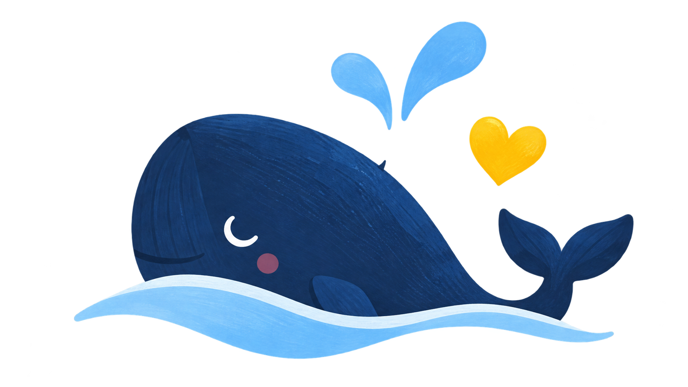
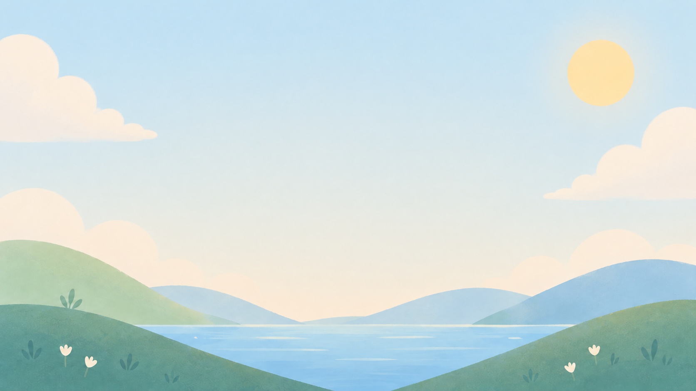
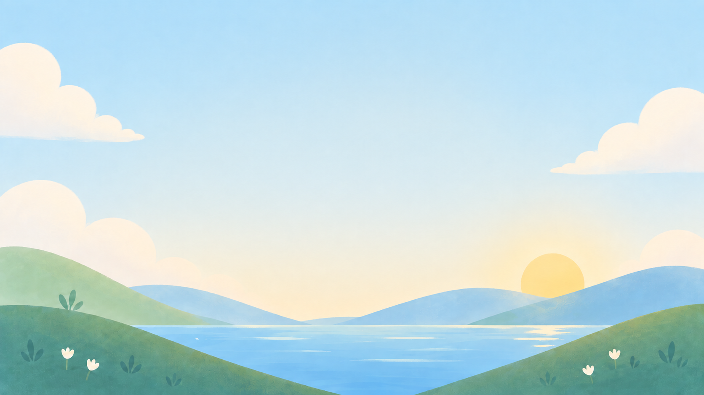
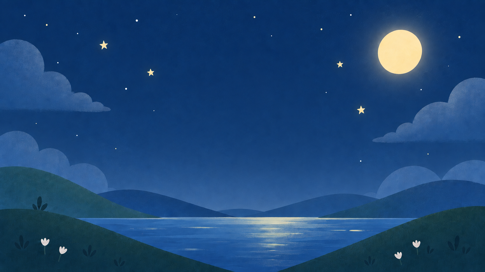
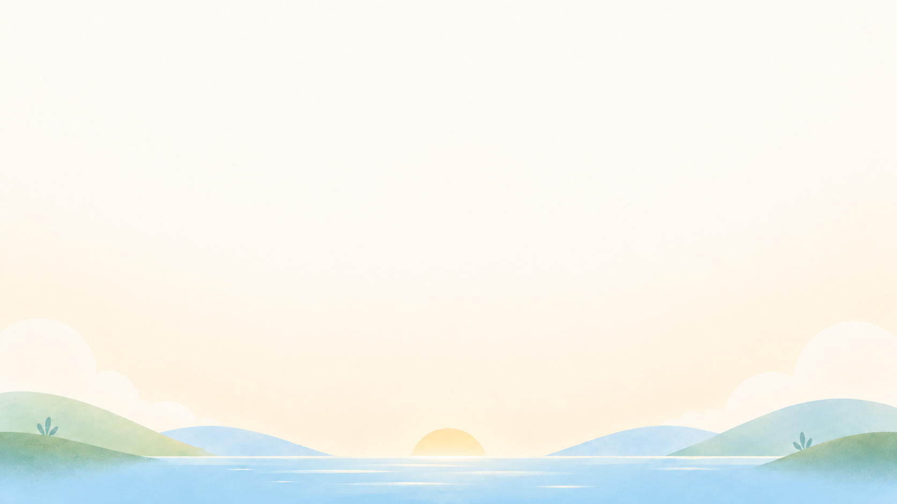
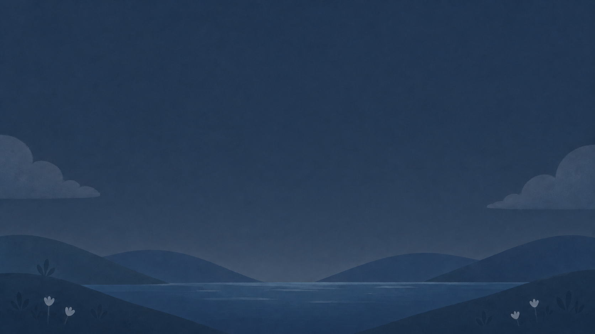
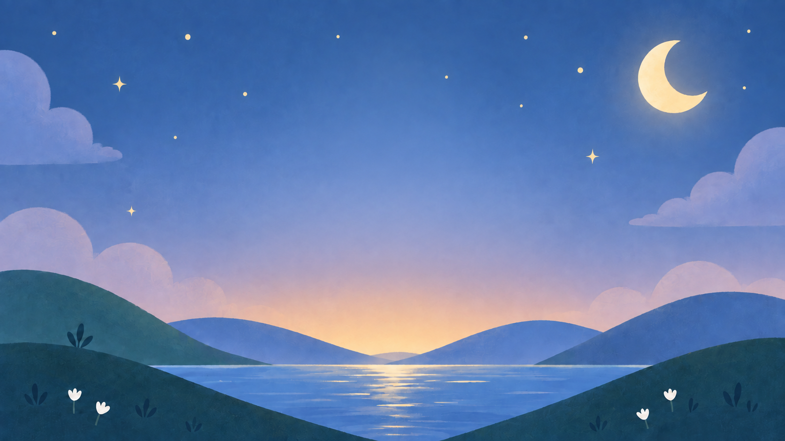
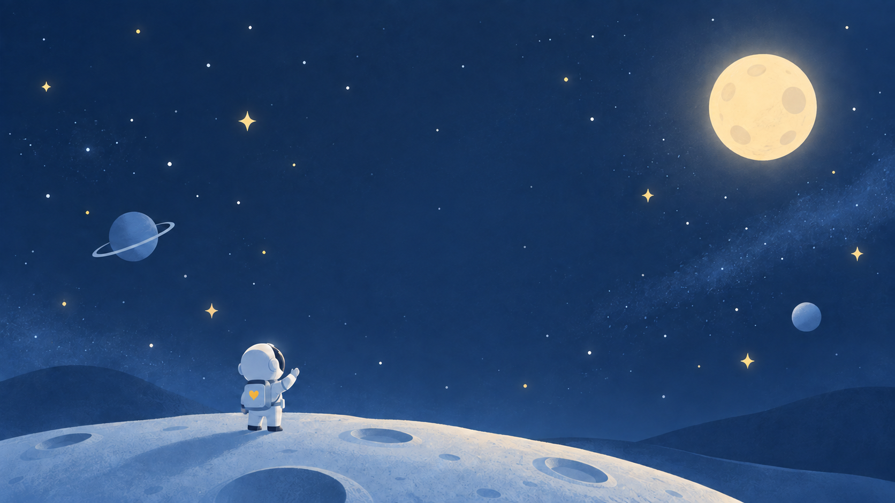

01 / Familiar objects
One recognisable object per application.
Soft depth, generous space, no captions.
ANNELIE OS · DESIGN SYSTEM
Quiet landscapes. Familiar objects. Room to learn.

One recognisable object per application.
Soft depth, generous space, no captions.
Hallo, kleine Welt.
Heute schreibe ich
meine Geschichte.
Nunito for the interface.
Courier Prime for the ringbook.
Four dots while loading.
One clear action for an empty state.
ANNELIE OS · APPEARANCE
Choose a scene. Your clock, programs and writing stay with you.






